Project 04 · Mobile AR Learning
"How to turn confusion into curiosity." A mobile AR application that helps rookie baseball fans build intuitive pitch recognition through spatial experience.
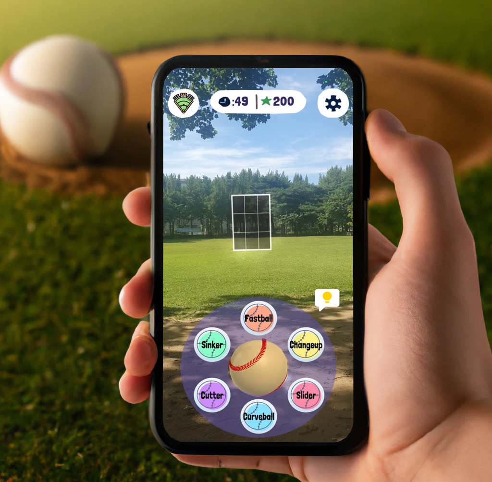
Baseball faces declining youth engagement — only 7% of Americans under 30 name it as their favorite sport. Game structure changes (longer games, more strikeouts, fewer balls in play) confuse new fans more than they engage them. Recurring user feedback: "slow pace of play," "lengthy play time," "difficulty understanding the game."
The core issue: a disconnect between explanation and recognition. New fans lacked intuitive pitch-type identification skills, making the sport feel inaccessible.
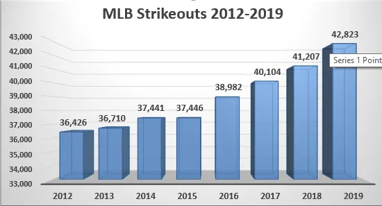
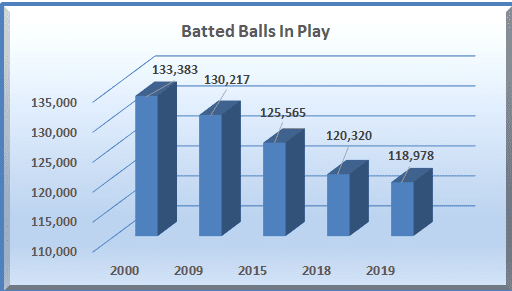
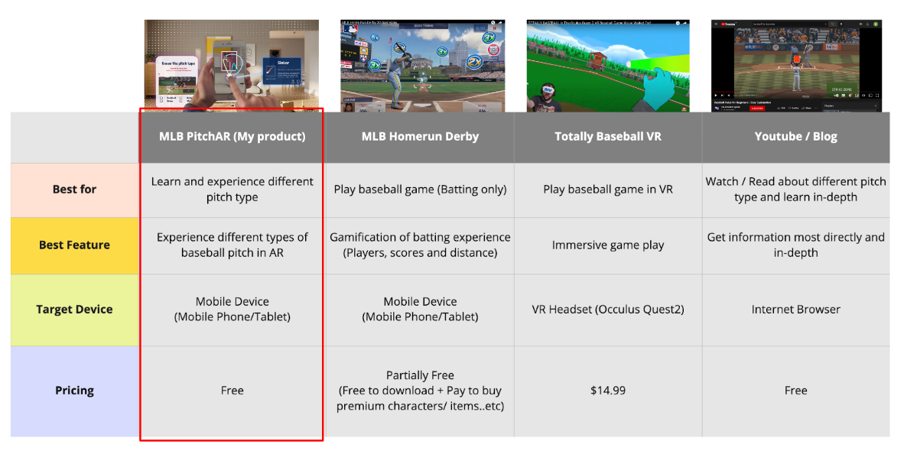
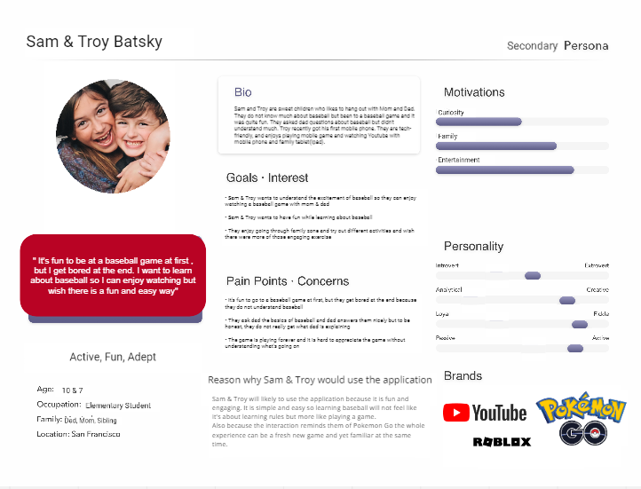
If new fans could intuitively identify pitch types, would that increase engagement?
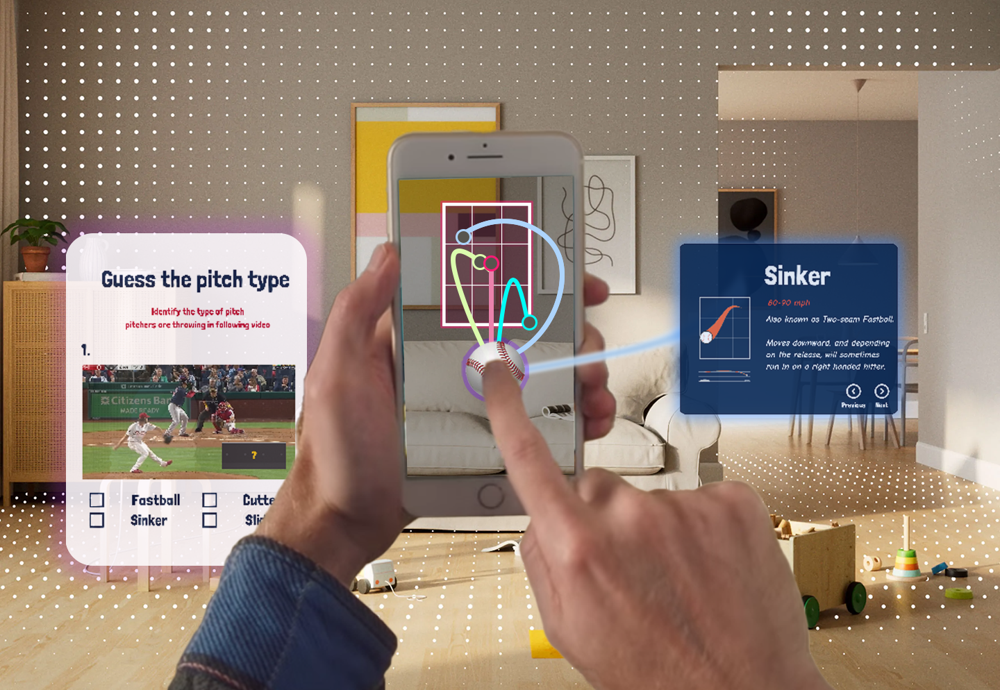
From userflow sketch to lo-fi Figma to hi-fi prototype to a working Unity / Niantic Lightship build.
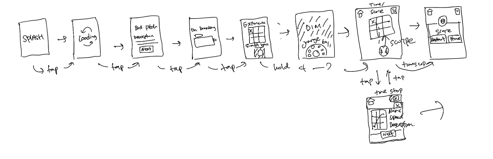
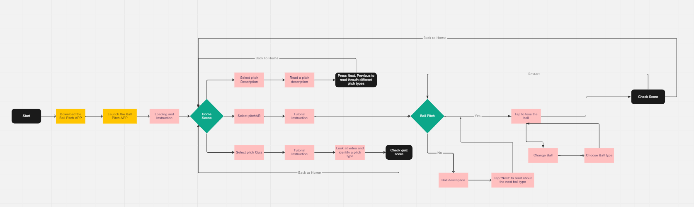
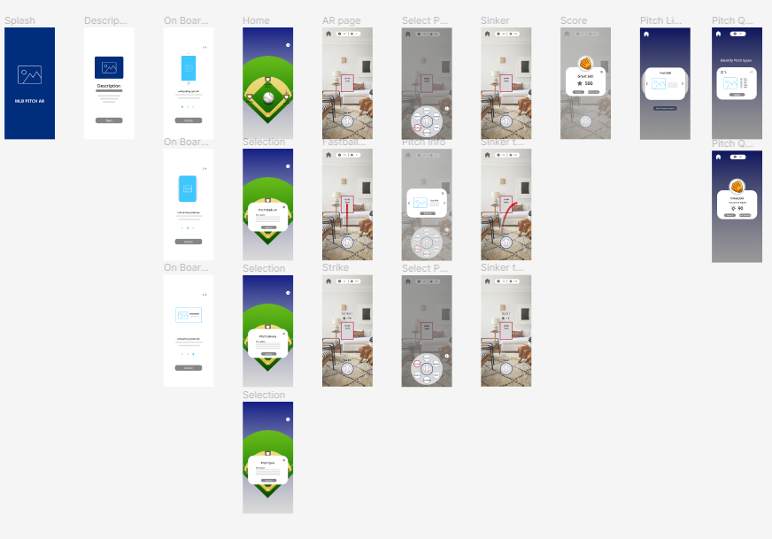
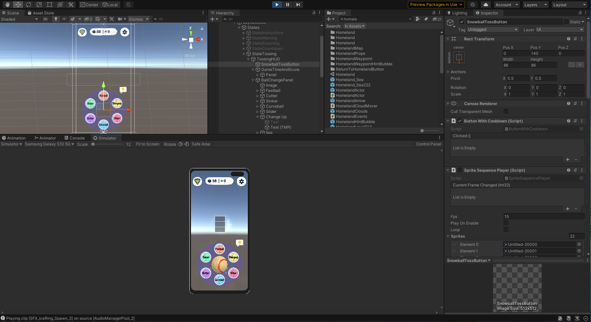
Three rounds of in-person testing with casual fans aged 25–30, five participants per round.
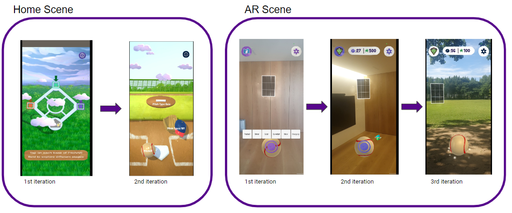
Mobile AR demo — guess the pitch, watch the spatial trajectory, and learn through repeated motion exposure.
Phone-held demo of the AR pitch recognition flow.